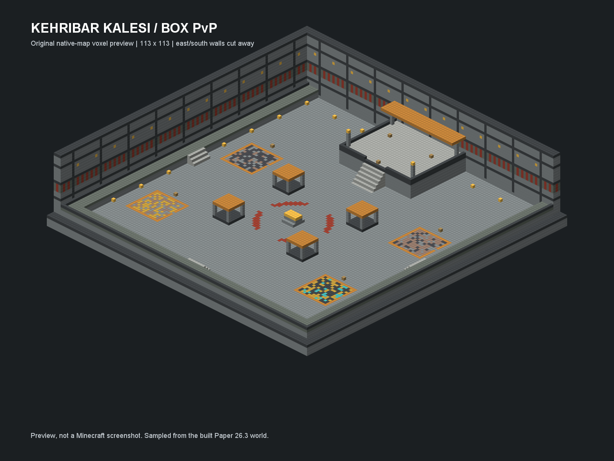

Box PvP
Cevher topla, ekipmanını takasla geliştir ve arenada savaş. Klasik Box PvP; kendi cevher ekonomisiyle oynanır.
Oyuna açık · Hesabına giriş yaptıktan sonra hub'dan katılabilirsin.

Oyuna giriş
- Girişini tamamla. Önce sunucuda hesabına giriş yap ve hub'a ulaş. Bağlantı bilgileri.
- Oyunu seç. Hub'da
/boxpvpyaz veya Box PvP NPC'sini seç. - Spawn'da hazırlan. Güvenli avluda kitini, ekipmanını ve kişisel deponu kontrol et. Burada PvP yapılmaz.
- Madene ve arenaya geç. Cevher topla ve ekipmana takas et. Spawn dışındaki arena ve maden kenarları PvP alanıdır.
Kehribar Kalesi
Yükseltilmiş güvenli avlu, ortadaki düello alanı, dört maden çukuru ve çevre galerisi. Boşalan madenlerden dış merdivenlerle çıkabilirsin.

Dört maden
| Maden | Süre | Başlıca cevher |
|---|---|---|
| Kömür Ocağı | 180 saniye | Kömür, demir |
| Demir Ocağı | 210 saniye | Demir, kömür |
| Altın Ocağı | 240 saniye | Altın, demir |
| Elmas Ocağı | 270 saniye | Elmas, altın |
Kalan blok oranı %30'un altına indiğinde maden süreyi beklemeden yenilenir. Yenilemeden önce çukurdaki oyuncular sağlam PvP kenarına çıkarılır; savaş etiketi silinmez. Sunucu boşken zamanlayıcıyla dolum yapılmaz.
Cevher için uygun kazma gerekir. Yalnızca madenin kendi bloklarını kazabilirsin; blok yerleştirilmez.
Cevher takasları
Güvenli avluda /box takas ile takasları aç. Para bakiyesi yoktur; bedel doğrudan taşıdığın kömür, ham demir, ham altın veya elmasla ödenir. Survival ve Skyblock bakiyeleri bu ekonomiye dahil değildir.
| Ürün | Bedel |
|---|---|
| Demir kazma · Verimlilik I | 24 kömür + 8 ham demir |
| Demir kılıç | 32 ham demir + 16 kömür |
| Demir zırh parçası · Koruma I | 48 ham demir + 16 kömür |
| Elmas kazma · Verimlilik II | 48 ham altın + 32 ham demir |
| Elmas kılıç · Keskinlik I | 16 elmas + 32 ham altın |
| Elmas zırh parçası · Koruma II | 24 elmas + 32 ham altın |
| Usta elmas kazma · Verimlilik IV | 48 elmas + 64 ham altın |
| Usta elmas kılıç · Keskinlik III | 48 elmas + 64 ham altın |
| Usta elmas zırh parçası · Koruma III | 48 elmas + 64 ham altın |
| Ürün | Bedel |
|---|---|
| 16 ekmek | 8 kömür |
| 16 ok | 16 kömür |
| Yay | 24 ham demir + 16 kömür |
| Kalkan | 24 ham demir + 16 kömür |
| Altın elma | 24 ham altın |
Kit, onarım ve depo
Bu hizmetler yalnızca güvenli avluda ve savaş dışında kullanılabilir.
- Başlangıç kiti
- Taş kazma, taş kılıç, 16 ekmek ve tam deri zırh. İlk boş envanterle girişte ve boş yeniden doğuşta verilir. Sonradan
/box kitalmak için envanterin ve zırhın boş olmalı; bekleme süresi 600 saniye, yani 10 dakikadır. Kitler üst üste alınamaz; başlangıç eşyaları yere atılmaz veya ölüm ganimetine eklenmez. - Onarım
/box onarelde tuttuğun hasarlı ekipmanı 16 kömür karşılığında onarır. Eşya hasarsızsa veya bedel eksikse kömür alınmaz.- Kişisel Ender depo
/box depoyalnızca güvenli avluda 27 yuvalı özel deponu açar. Ölümde ve savaş sırasında bağlantı kesilmesinde depo içeriği korunur. Başka sunuculara aktarılmaz.
Oyuncu komutları
| Komut | Kullanım |
|---|---|
/boxpvp | Hub'dan Box PvP'ye geç. |
/box kit | Güvenli avluda, boş envanter ve boş zırhla kit al. Bekleme süresi 10 dakika. |
/box takas | Cevher karşılığı ekipman ve yiyecek takaslarını aç. |
/box onar | Güvenli avluda, eldeki hasarlı ekipmanı 16 kömüre onar. |
/box depo | Güvenli avluda 27 yuvalı kişisel Ender depoyu aç. |
/box spawn | Savaş etiketin yoksa 5 saniye hareket etmeden bekleyerek güvenli avluya dön; bu ana hub'a dönüş değildir. |
Savaş ve eşya kaybı
Ölümde, başlangıç kitine ait eşyalar hariç taşıdığın ekipman ve cevherler yere düşer. Kişisel Ender depon korunur.
Savaş etiketi 20 saniyedir. Etiket sürerken güvenli avluya giremez, ışınlanamaz veya hizmet komutlarını kullanamazsın; takas ve depo kapanır. Maden yenilenmesi etiketi kaldırmaz.
Etiket sürerken bağlantını kesersen karakterin ölür; başlangıç dışı ekipman ve cevherler yere düşer. Sunucu veya eklenti tarafından atılmak bu cezayı tetiklemez.
- Hile, makro ve otomatik saldırı kullanma.
- Güvenli avlunun içine veya dışına saldırı yapılamaz; korumayı aşmaya çalışma.
- Çoğaltma ya da takas açığı bulursan kullanma; destek ekibine bildir.
- Diğer oyuncuları taciz etme. Sunucu kuralları burada da geçerlidir.